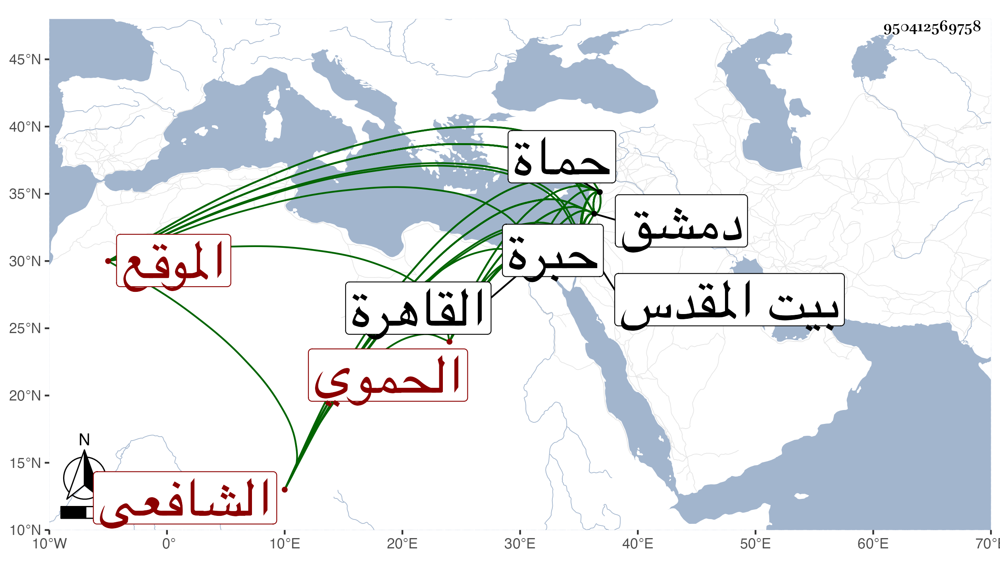

0902Sakhawi.DawLamic.ITO20230111-ara1.EIS1600.950412569758
Biography ID: 950412569758
698
محمد بن صلاح بن يوسف الشمس بن الصلاح الحموي الشافعي الموقع سبط الجمال خطيب المنصورية وسمى بعضهم والده محمدا . ولد في أوائل صفر سنة ثمان وثمانمائة بحماة وقرأ بها القرآن وتلا به لأبي عمرو على إبراهيم المعري بالمهملة والتشديد وكذا حفظ الحاوي والحاجبية وأحضره جده في الثانية على عائشة ابنة ابن عبد الهادي الصحيح واشتغل بالفقه على النور محمود بن خطيب الدهشة وبالنحو على الشمس بن خليل ، ثم ارتحل إلى دمشق سنة ثمان وعشرين للاشتغال فأخذ النحو عن الشمس بن العيار الحموي فتقدم ونظم ونثر واستمر مقيما بدمشق ، وكتب الإنشاء بحماة ثم بدمشق أيام كاتب سرها البدر حسين ثم لما قدم الكمال بن البارزي على كتابة سرها وقضائها مدحه وصحبه وباشر عنده فأعجبه خطه وحظي عنده وتردد معه إلى القاهرة ودمشق في ولاياته بهما وصار أحد أخصائه وولي نظر القدس والخليل في سنة اثنتين وخمسين ولم يلبث أن مات به بذات الجنب في يوم الخميس ثاني عشر رمضان سنة ثلاث ودفن بالمدرسة المعظمية وكان مشهده حافلا ، ومن نظمه :
| شكت سهرا في حب سيف مقلتي | بجفن قريح من جفاه وباكي |
| فقلت أتبغي النوم في حبه وقد | تجرد يا عيني لصيد كراكي |
ومن قصائده التي امتدح بها الكمال :
| كم ذا تموه بالشعبين والعلم | والأمر أشهر من نار على علم |
| أراك تسأل عن سلع وأنت بها | وعن تهامة هذا فعل متهم |
وكذا منها قوله وهو أولها :
| لمرسلات دموعي في الغرام نبا | وسيف عزمي إذا لاقى السلو نبا |
بل ورأيت من نسب له ما قدمته في البدر محمد بن حسين بن علي ضفدع ، وله لغز في المرآة يلعب فيه بضروب الأدب وختمه بقوله يكاد سنا برقه يذهب بالأبصار أجابه البرهان الباعوني عنه بجواب بديع أبرز اللغز فيه فقال بعد إطنابه في الغز وإذا نظرت إليه كأنك تنظر في مرآة صقيلة .
